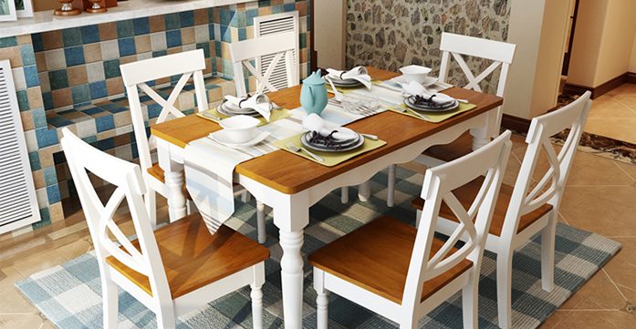
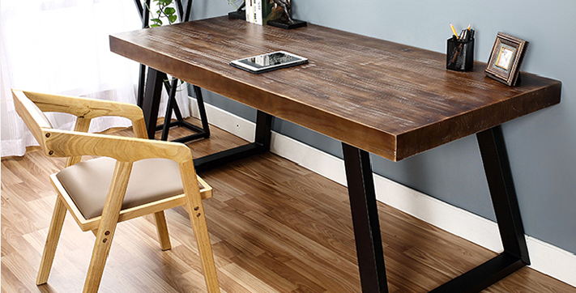
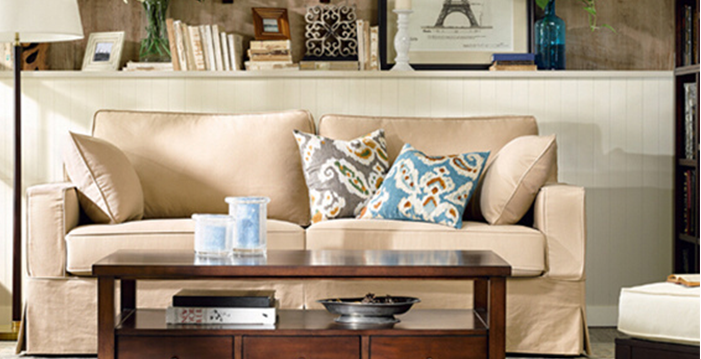
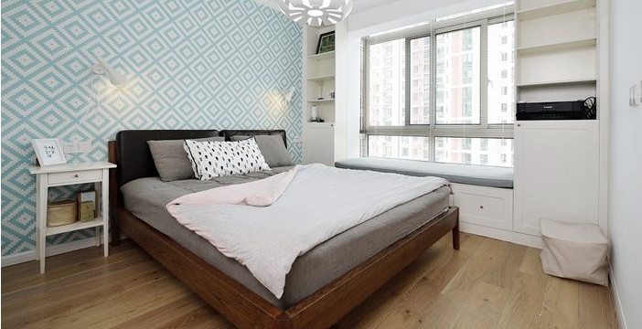
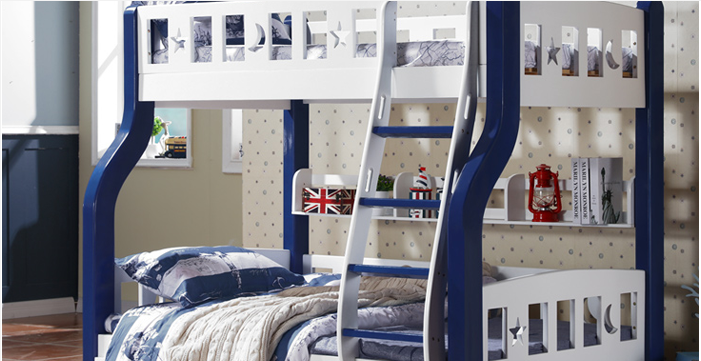
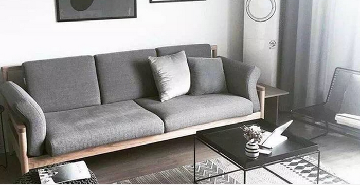

<
<
高雨欣
2017-4-13
家具尺寸不合适不仅用起来别扭，有的时候还会影响身体健康，无论是购买还是定制家具，这些常规的尺寸知识，一定要知道。
这是高雨欣从家装设计师那里偷来的知识，特意分享给大家，觉得实用记得要转发收藏哦！
餐桌椅尺寸：
①餐桌的科学高度为72cm左右。
②餐椅的座面高度为45cm，太高脚无法着地，太低则坐姿不舒服
③桌椅配套使用时，桌椅高度差应控制在28-32cm范围内。
书桌椅：
①按我国正常人体测算，写字台高度应为75－80cm，长度应大于90cm，座椅高度应为40－50cm，座椅宽度不小于38cm。
②书桌下空间的高度不小于58cm，空间宽度不小于52cm。这是为了保证人在使用时两腿能有足够的活动空间。
茶几尺寸：
①沙发和茶几的间距应在40-45cm之间。
②茶几的高度可以与沙发相仿，也可以略高于沙发高度，方便拿东西。
③与三人沙发搭配的茶几尺寸应该为120*70*45（cm）或100*100*45（cm）。
双人床：
①床的长度为人的身高加上身长的5%，再加上头部放枕头的余量和脚端折被余量共计2m左右。
②床的高度在人体膝盖部位（45-50cm）为宜，人坐床上双腿能够着地且床边部位不压迫大腿部肌肉为佳。
上下床：（儿童房）
①上下床床面之间的净高度应不小于95cm， 以保证下床有足够的活动空间。
②床上层需要设置防护栏，且防护栏高度应不低于20cm，以防摔下来。
这类床一般用在儿童房较多，在高度和护栏处必须考虑到两个孩子的安全问题。
沙发尺寸：
①长沙发或扶手沙发的靠背高度应为85-90cm。
②沙发与电视机（29英寸）之间距离应为3米左右。
③沙发深度不能小于48cm，座深过大则小腿无法自然下垂，而过浅就会坐不住。
④座面的高度应在36-42cm之间，过高过低坐着都不舒服。